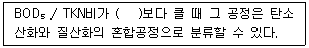
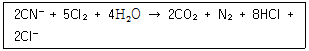
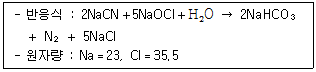
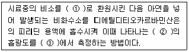
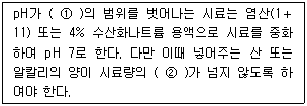

수질환경산업기사 (2009-07-26 기출문제)
1과목: 수질오염개론
1. 진한 산성폐수를 중화처리 하고자 한다. 10% NaOH 용액 사용시 40mL가 투입되었는데 만일 10% Ca(OH)2로 사용한다면 몇 mL가 필요하겠는가? (단, 완전 해리 기준, 원자량 Na＝23, Ca＝40)
- 17.4
- 18.5
- 37.0
- 57.5
(정답률: 알수없음)
2. 시판되고 있는 액상 표백제는 8W/W(%) 하이포아염소산나트륨(NaOCl)을 함유한다. 표백제 3,000mL 중의 NaOCl의 무게(g)는? (단, 표백제의 비중은 1.1이다.)
- 254
- 264
- 274
- 284
(정답률: 알수없음)

3. 적조현상의 촉진요인이 아닌 것은?
- 해류의 정체
- 염분농도 증가
- 수온의 상승
- 영양염류 중가
(정답률: 알수없음)
4. Bacteria의 약 80%는 H2O이고, 약 20%가 고형물로 구성되어 있다. 이 고형물 중 유기물질은 약 몇 % 인가?
- 70%
- 80%
- 90%
- 99%
(정답률: 알수없음)
5. 0.04M－HCl 이 10% 해리되어 있는 수용액의 PH는?
- 2.4
- 2.8
- 3.2
- 3.6
(정답률: 알수없음)
6. 지하수 수질 및 오염에 관한 설명으로 틀린 것은?
- DO가 낮아 미생물에 의한 생화학적 작용이나 화학적 자정능력이 약하다.
- 지하수의 성분조성은 하천수와 비슷하나 경도가 높다.
- 지하수 중 천층수가 오염가능성이 높다.
- 지표수에 비하여 자연, 인위적인 국지조건에 따른 영향이 적다.
(정답률: 알수없음)
7. 수분 함량 97%의 슬러지 14.7m3를 수분함량 80%로 농축하면 농축 후 슬러지 용적은? (단, 슬러지 비중은 1.0)
- 4.92m3
- 3.87m3
- 2.21m3
- 1.43m3
(정답률: 알수없음)
8. 4g의 NaOH를 물에 용해시켜 전량을 250ml로 하였다면 이 용액의 N 농도는?
- 0.1
- 0.2
- 0.4
- 0.8
(정답률: 알수없음)
9. K1(탈산소계수, base＝상용대수)가 0.1/day인 어느 물질의 BOD5=400mg/L이고, COD＝1,000mg/L 라면 NBCOD(mg/L)는? (단, BODCOD=800u)
- 415
- 435
- 455
- 475
(정답률: 알수없음)
10. 호소의 성층 현상에 관한 설명으로 틀린 것은?
- 물의 수온에 따른 밀도차이로 발생하는 현상이다.
- 성층 중 수온약층은 수심에 따른 수은의 변화가 커 변온층 이라고도 한다.
- 전도현상은 봄과 가을에 일어난다.
- 여름철에 수심에 따라 온도와 용존산소의 변화는 반대 경향을 가진다.
(정답률: 알수없음)
11. 미생물의 영양적 분류에 관한 설명으로 틀린 것은?
- 광합성 독립영양미생물 : 광을 에너지원으로하여 이산화탄소를 주 탄소원으로 이용한다.
- 광합성 종속영양미생물 : 유기화합물을 주 탄소원으로 한다.
- 화학합성 독립영양미생물 : 이산화탄소를 주 탄소원으로 하여 생육한다.
- 화학합성 종속영양미생물 : Nitrobacter의 질산염 산화에 의한 에너지 이용이 대표적이다
(정답률: 알수없음)
12. 자정계수(f)에 관한 다음 설명 중 잘못된 것은?
- 자정계수는 소규모 저수지보다 대형호수가크다
- [재폭기계수/탈산소계수]로 나타낸다.
- 수온이 증가할수록 자정계수는 높아진다.
- 하천의 유속이 클수록 자정계수는 커진다.
(정답률: 알수없음)
13. 도면은 미생물의 성장과 유기물과의 관계 곡선이다. (F : 먹이인 유기물량, M : 미생물량) 다음 중 변곡점까지의 미생물의 성장 상태를 가장 적절하게 나타낸 것은? (문제 오류로 문제 및 보기 내용이 정확하지 않습니다. 정확한 내용을 아시는 분께서는 오류신고를 통하여 내용 작성 부탁드립니다. 정답은 4번입니다.)
- 내생성장 상태
- 감소성장 상태
- Floc 형성 상태
- log 성장 상태
(정답률: 알수없음)
14. 25℃, AgCl의 물에 대한 용해도가 1.0 × 10-4이라면 AgCl에 대한 (용해도적)는?
- 1.0 × 10-6
- 2.0 × 10-6
- 1.0 × 10-8
- 2.0 × 10-8
(정답률: 알수없음)
15. BOD가 10,000mg/L이고 염소이온농도가 1,000mg/L인 분뇨를 희석하여 활성 슬러지법으로 처리한 결과 방류수의 BOD는 40mg/L, 염소이온의 농도는 25mg/L으로 나타났다. 활성 슬러지법의 처리효율은? (단, 염소는 생물학적 처리에서 제거되지 않음)
- 72%
- 78%
- 84%
- 93%
(정답률: 알수없음)
16. 모든 진핵생물이 가지고 있는 세포소기관(Organelles)은?
- 핵막
- 미토콘드리아
- 리보좀
- 세포벽
(정답률: 알수없음)
17. 다음 중 물이 가지는 특성 중 틀린 것은?
- 물의 밀도는 0℃에서 가장 크며 그 이하의 온도에서는 얼음형태로 물에 뜬다.
- 물은 광합성의 수소공여체이며 호흡의 최종산물이다.
- 생물체의 결빙이 쉽게 일어나지 않는 것은 융해열이 크기 때문이다.
- 물은 기화열이 크기 때문에 생물의 효과적인 체온조절이 가능하다.
(정답률: 알수없음)
18. 페놀(C6H5OH) 150mg/L의 이론적인 COD(mg/L)는?
- 약 440
- 약 360
- 약 270
- 약 190
(정답률: 알수없음)
19. [기체가 관련된 화학반응에서는 반응하는 기체와 생성하는 기체의 부피 사이에 정수관계가 성립한다.]라는 내용의 기체법칙은?
- Graham의 결합 부치 법칙
- Gay－Lussac의 결합 부피 법칙
- Dalton의 결합 부피 법칙
- Henry의 결합 부피 법칙
(정답률: 알수없음)
20. 어느 폐수의 BODu가 100mg/L이며 (상용대수) K1값이 0.2/day 라면 5일 후 남아 있는 BOD는?
- 25mg/L
- 20mg/L
- 15mg/L
- 10mg/L
(정답률: 알수없음)
2과목: 수질오염방지기술
21. 암모늄이온(NH4+)을 27mg/L 함유하고 있는 폐수 2,000m3를 이온교환수지로 NH4+를 제거하고자 할 때 100,000g CaCO3/m3의 처리 능력을 갖는 양이온 교환수지의 소요용적은? (단, Ca 원자량∶40)
- 0.60m3
- 0.85
- 1.25m3
- 1.50m3
(정답률: 알수없음)
22. 우리나라 표준활성슬러지법의 일반적 설계 범위로 틀린 것은?
- HRT는 6~8 시간을 표준으로 한다.
- MLSS는 1,500~2,500mg/L를 표준으로 한다.
- 포기조(표준식)의 유효수심은 3~4m를 표준으로 한다.
- 포기방식은 전면포기식, 선회류식, 미세기포 분사식, 수중 교반식 등이 있다.
(정답률: 알수없음)
23. 활성슬러지 변법에 관한 설명으로 틀린 것은?
- 장기포기공정 : 질산화가 필요한 소도시 하수나 패키지형 처리장에 사용하며 공정의 유연성이 높다.
- 고율포기공정 : 산소전달과 플록 크기 조정을 위한 터빈 포기기와 같이 사용한다.
- 산화구 : 토지가 충분한 경우의 소규모 하수에 적용하며 공정 유연성이 높다.
- 심층포기공정 : 일반적으로 저농도 폐수에 적용하며 부하변동에 비교적 강하다.
(정답률: 알수없음)
24. 포기조내의 MLSS가 3,000mg/l 포기조 용적이 2,000m3인 활성슬러지법에서 최종침전지에 유출되는 SS는 무시하고 매일 60m3의 폐슬러지를 뽑아서 소화조로 보내 처리한다. 폐슬러지의 농도가 1%라면 세포의 평균체류시간(SRT)은?
- 120 시간
- 144 시간
- 192 시간
- 240 시간
(정답률: 알수없음)
25. 5단계 Bardenpho 공정 중 호기조의 역할에 관한 설명으로 가장 적절한 것은?
- 인의 방출
- 인의 과잉 섭취
- 슬러지 라이징
- 탈질산화
(정답률: 알수없음)
26. 다음은 질소제거를 위한 생물학적 고도 처리에 관한 내용이다. ( )안에 가장 적절한 내용은?

- 2
- 3
- 4
- 5
(정답률: 알수없음)
27. 처리유량이 200m3/hr이고, 염소요구량이 9.5mg/L, 잔류 염소농도가 0.5mg/L일 때 하루에 주입되는 염소의 양(kg/day)은?
- 2
- 12
- 22
- 48
(정답률: 알수없음)
28. 폭기조 혼합액을 30분간 침전 시킨 뒤의 침전물의 부피는 400ml/L이었고, MLSS 농도가 3,000mg/L 이었다면 침전지에서 침전상태는?
- 정상적이다.
- 슬러지 팽화로 인하여 침전이 되지 않는다.
- 슬러지 부상(Sludge Rising) 현상이 발생하여 큰 덩어리가 떠오른다.
- 슬러지가 Floc을 형성하지 못하고 미세하게 떠다닌다.
(정답률: 알수없음)
29. 200mg/L의 CN(시안)을 함유한 폐수 100m3을 알칼리 염소법으로 처리하는데 필요한 이론적인 염소량(Cl2, kg)은? (단, 원자량은 Cl : 35.5)

- 약 40kg
- 약 80kg
- 약 140kg
- 약 180kg
(정답률: 알수없음)
30. BOD 300mg/L인 폐수를 20℃에서 살수여상법으로 처리한 결과 BOD가 60mg/L이었다. 이 폐수를 26℃에서 처리한다면 유출수의 BOD는? (단, 처리효율 Et = E20 × 1.035T-20이다.)
- 5mg/L
- 10mg/L
- 15mg/L
- 20mg/L
(정답률: 알수없음)
31. 생물학적 인 제거 공정에 관한 설명으로 틀린 것은?
- Acinetobacter는 인제거를 위한 중요한 미생물의 하나이다.
- 5단계 Bardenpho 공정에서 인은 폐슬러지에 포함되어 제거된다.
- Phostrip 공정인 인 성분을 Main－Stream에서 제거하는 공정이다.
- A2/0 공정은 질소와 인 성분을 함께 제거할 수 있다.
(정답률: 알수없음)
32. 어떤 공장에서 배출되는 시안 폐수를 알칼리 염소주입법으로 처리하고자 한다. 이 때 CN- 이 300mg/L, 유량이 300m3/d 이라면 NaOCl의 1일 소요량은?

- 약 365kg
- 약 435
- 약 545kg
- 약 645kg
(정답률: 알수없음)
33. 고온 혐기성 소화법에 관한 설명으로 틀린 것은?
- 고온소화는 중온 소화보다 반응속도가 빠르다.
- 고온소화는 슬러지 처리능력이 증가 되고 슬러지의 탈수성이 개선된다.
- 고온소화는 고온 박테리아의 적절한 조건인 49~57℃ 정도의 온도 범위에서 일어난다.
- 용존성 고형물질의 처리로 상징수 수질이 개선된다.
(정답률: 알수없음)
34. 고도 수처리에 사용되는 분리막에 관한 설명으로 틀린 것은?
- 정밀여과의 막형태는 비대칭형 Skin형막이다.
- 한외여과의 구동력은 정수압차이다.
- 역삼투의 분리형태는 용해, 확산이다.
- 투석의 구동력은 농도차이다.
(정답률: 알수없음)
35. 회전원판법(RBC)의 단점이 아닌 것은?
- 충격부하 및 부하변동에 약하다.
- 처리수의 투명도가 낮다.
- 일반적으로 회전체가 구조적으로 취약하다.
- 외기기온에 민감하다.
(정답률: 알수없음)
36. BOD 1.0kg 제거에 필요한 산소량은 1.0kg이다. 공기 1m3에 포함된 산소량이 0.277kg이라 하면 활성슬러지에서 공기용해율이 6%(V/V%)일 때 BOD 1.0kg을 제거하는데 필요한 공기량은?
- 60.2m3
- 80.3m3
- 100.5m3
- 120.8m3
(정답률: 알수없음)
37. 가압부상조 설계에 있어서 유량이 2,000m3/day인 폐수 내에 SS의 농도가 500mg/L, 공기의 용해도는 18.7mL/L 이라고 할 때 압력이 4기압인 부상조에서의 A/S 비는? (단, 용존공기의 분율은 0.5이며 반송은 고려하지 않음)
- 0.0272
- 0.0486
- 0.0643
- 0.0917
(정답률: 알수없음)
38. 정수 처리를 위한 응집제에 관한 설명으로 틀린 것은?
- 황산알루미늄은 황산반토라고도 하며 고형과 액체가 있고 최근에는 대부분 액체가 사용된다.
- 폴리염화알루미늄은 황산알루미늄보다 응집성이 우수하고 적정 주입 pH의 범위가 넓으며 알칼리도의 저하가 적다.
- 폴리염화알루미늄을 황산알루미늄과 혼합 사용하면 침전물 발생을 억제 할 수 있다.
- 폴리염화알루미늄은 액체로서 그 액체 자체가 가스 분해되어 중합체로 되어 있다.
(정답률: 알수없음)
39. 월류 위어의 반지름이 10m이다. 폐수량이 2,000m3/day일 때 월류 위어의 부하율은?
- 16m3/mㆍday
- 28m3/mㆍday
- 32m3/mㆍday
- 46m3/mㆍday
(정답률: 알수없음)
40. BOD가 200mg/l이고 유량이 2,000m3/day인 폐수를 활성슬러지법으로 처리하고자 한다. 포기조의 BOD 용적 부하가 0.4kg/m3ㆍday라면 포기조의 부피는?
- 1,500m3
- 1,000m3
- 750m3
- 500m3
(정답률: 알수없음)
3과목: 수질오염공정시험방법
41. 불소 측정방법으로 가장 적절한 것은? (단, 수질오염공정시험기준 기준)
- 흡광광도법－가스크로마토그래피법
- 흡광광도법－원자흡광광도법
- 흡광광도법－유도결합플라스마 발광광도법
- 흡광광도법－이온전극법
(정답률: 알수없음)
42. 식물성 플랑크톤(조류) 분석에 관한 설명으로 틀린 것은?
- 시료의 조제 : 시료의 개체수는 계수 면적당 10~40 정도가 되도록 조정한다.
- 시료의 조제 : 원심분리방법과 자연침전법을 적용한다.
- 점성시험 : 목적은 식물성 플랑크톤의 종류를 조사하는 것이다.
- 정량시험 : 식물성 플랑크톤의 계수는 정확성과 편리성을 위하여 고배율이 주로 사용된다.
(정답률: 알수없음)
43. 가스크로마토그래프 분석에 사용되는 검출기 중 니트로화합물, 유기금속 화합물, 유기활로겐 화합물을 선택적으로 검출하는데 가장 적절한 것은?
- 전자포획형검출기
- 열전도도검출기
- 불꽃광도형검출기
- 불꽃이온화검출기
(정답률: 알수없음)
44. 유도결합플라스마 발광광도계 장치의 설정조건에서 수용액 시료의 경우 고주파 출력 설정조건 기준으로 맞는 것은?
- 0.4~0.8kW
- 0.8~1.4kW
- 1.5~2.5kW
- 2.5~3.4kW
(정답률: 알수없음)
45. 채취된 시료를 규정된 보존방법에 따라 조치했다면 최대 보존기간이 가장 짧은 측정항목은?
- 6가 크롬
- 노말헥산추출물질
- 클로로필a
- 색도
(정답률: 알수없음)
46. 다음 중 질산성 질소 분석방법이 아닌 것은?
- 이온크로마토그래피법
- 흡광광도법(부루신법)
- 카드뮴 환원법
- 자외선 흡광광도법
(정답률: 알수없음)
47. 이온전극법에 관한 설명으로 틀린 것은?
- 이온농도의 측정범위는 10-1mol/L ~ 10-4mol/L(또는 10-7mol/L)이다.
- 이온의 활량계수는 이온강도에 영향을 받지 않으므로 비교적 일정하게 유지할 수 있다.
- 측정용액의 온도가 10℃ 상승하면 전위기울기는 1가 이온이 약 2mV, 2가 이온이 약 1mV 변화한다.
- 시료용액의 교반은 이온전극의 전극범위, 응답속도, 정량한계 값에 영향을 나타낸다.
(정답률: 알수없음)
48. 납 정량법인 디티존 흡광광도법에 관한 설명으로 틀린 것은?
- 납이온이 시안화칼슘 공존하에 산성에서 디티존과 반응한다.
- 납 착염의 흡광광도를 520nm에서 측정한다.
- 정량범위는 0.001~0.04mg이다.
- 표준편차율은 10~3%이다.
(정답률: 알수없음)
49. 전처리 방법 중 질산－과염소산에 의한 분해에 관한 설명으로 틀린 것은?
- 유기물을 다량 포함하고 있으면서 산화분해가 어려운 시료에 적용한다.
- 시료에 질산을 넣고 가열하여 증발농축하고 방냉 후 다시 질산과 과염소산을 넣고 가열하여 백연이 발생하기 시작하면 가열을 중지한다.
- 질산만을 넣을 경우 폭발 위험이 있어 과염소산을 넣고 질산을 넣는다.
- 유기물을 함유한 뜨거운 용액에 과염소산을 넣어서는 안 된다.
(정답률: 알수없음)
50. 다음은 비소를 흡광광도법을 적용하여 측정할 때의 원리이다. ( )안에 맞는 내용은?

- ① 3가 비소, ② 청색, ③ 620nm
- ① 3가 비소, ② 청자색, ③ 530nm
- ① 6가 비소, ② 청색, ③ 620nm
- ① 6가 비소, ② 청자색, ③ 530nm
(정답률: 알수없음)
51. 실험에 일반적으로 적용되는 용어의 정의로 틀린 것은? (단, 공정시험기준 기준)
- 진공이라 함은 따로 규정이 없는 한 15mmHg 이하를 말한다.
- 감압이라 함은 따로 규정이 없는 한 15mmHg 이하를 말한다.
- 냄새가 없다라고 기재한 것은 정상인이 감지할 수 없는 정도를 말한다.
- 정확히 취하여란 규정한 양의 시료 또는 시액을 홀피펫으로 눈금까지 취하는 것을 말한다.
(정답률: 알수없음)
52. 개수로에 의한 유량 측정시 케이지(Chezy)의 유속공식이 적용된다. 경심이 0.653m, 홈 바닥의 구배 i＝1/1,500, 유속계수가 31일 때 평균 유속은?
- 약 0.25m/sec
- 약 0.45m/sec
- 약 0.65m/sec
- 약 0.85m/sec
(정답률: 알수없음)
53. 휘발성 탄화수소의 시료보존 방법으로 가장 적절한 것은?
- 염산(1＋10)을 1방울/10mL로 가하여 4℃ 냉암소 보존
- 염산(1＋10)을 1방울/20mL로 가하여 4℃ 냉암소 보존
- 황산(1＋5)을 1방울/10mL로 가하여 4℃ 냉암소 보존
- 황산(1＋5)을 1방울/20mL로 가하여 4℃ 냉암소 보존
(정답률: 알수없음)
54. 4각 위어에 의하여 유량을 측정하려고 한다. 위어의 수두 0.8m, 절단의 폭 2.5m 이면 유량은? (단, 유량계수는 1.6 이다.)
- 2.86m3/min
- 3.72m3/min
- 4.20m3/min
- 5.25m3/min
(정답률: 알수없음)
55. 질산성질소 표준원액 0.5mgNO3－N/ml를 조제하려면, 미리 1⑤~110℃에서 4시간 건조한 질산칼륨(KNO3 표준시약) 몇 g을 정밀히 달아 물에 녹여 정확히 1,000ml로 하면 되는가? (단, 원자량은 K : 39.1)
- 2.83
- 3.61
- 4.72
- 5.38
(정답률: 알수없음)
56. 다음 중 디페닐카르바지드와 반응하여 생성하는 적자색 착화합물의 흡광도를 540nm에서 측정 정량하는 항목은?
- 비소
- 니켈
- 6가 크롬
- 알킬 수은
(정답률: 알수없음)
57. 구리를 원자흡광광도법으로 정량하는 방법으로 틀린 것은?
- 정량범위는 442.7nm에서 0.02~0.4mg/L이다.
- 유효측정 농도는 0.008mg/L 이상으로 한다.
- 구리 중공음극램프를 사용한다.
- 가연성가스는 아세틸렌, 조연성가스는 공기를 사용한다.
(정답률: 알수없음)
58. BOD 축정시 시료의 전처리에 관한 내용이다. ( )안의 내용으로 맞는 것은?

- ① pH 4.3~8.5, ② 0.2%
- ① pH 5.6~8.3, ② 0.3%
- ① pH 6.3~8.3, ② 0.3%
- ① pH 6.5~8.5, ② 0.5%
(정답률: 알수없음)
59. 시료채취시의 유의사항에 관한 설명으로 맞는 것은?
- 채취용기는 사료를 채우기 전에 시료로 한번 이상 씻은 후 사용한다.
- 환원성 물질을 측정하기 위한 시료는 적당히 채워 적정 공간을 확보하여야 한다.
- 지하수 시료는 고여 있는 물의 10배 이상을 퍼낸 다음 새로 고이는 물을 채취한다.
- 시료채취량은 보통 3~5L 정도 이어야 한다.
(정답률: 알수없음)
60. 0.025N－KMnO4 4.0L를 만들려고 한다. KMnO4는 몇 g이 필요한가? (단, 원자량은 K＝39, Mn＝55, O＝16이다.)
- 1.4
- 2.4
- 3.2
- 4.2
(정답률: 알수없음)
4과목: 수질환경관계법규
61. 환경기술인을 임명하지 아니하거나 임명(바꾸어 임명한 것을 포함한다)에 대한 신고를 하지 아니한 자에 대한 과태료 처분 기준은?
- 200만원 이하
- 300만원 이하
- 500만원 이하
- 1,000만원 이하
(정답률: 알수없음)
62. 환경기술인 등의 교육에 관한 내용으로 틀린 것은?
- 환경기술인의 교육기관은 환경보전협회이다.
- 교육과정의 교육기간은 5일 이내로 한다.
- 기술요원의 교육기관은 국립환경인력개발원이다.
- 교육과정은 환경기술인과정과 배출ㆍ방지시설 기술요원 과정이 있다.
(정답률: 알수없음)
63. 해역의 항목별 생활환경 환경기준으로 틀린 것은? (단, 등급은 Ⅲ)
- pH : 6.5~8.5
- COD : 4mg/L 이상
- DO : 2mg/L 이상
- T－N : 0.5mg:L 이하
(정답률: 알수없음)
64. 사업장별 환경기술인의 자격기준에 관한 설명으로 알맞지 않은 것은?
- 환경기능사는 제 3종사업장의 환경기술인으로 종사할 수 있다.
- 2년 이상 수질분야 환경관련 업무에 직접 종사한 자는 제 3종 사업장의 환경기술인으로 종사할 수 있다.
- 방지시설 설치면제 대상인 사업장은 제 4종 사업장, 제 5종 사업장에 해당하는 환경기술인을 둘 수 있다.
- 공동방지시설의 경우에는 폐수배출량이 제 4종 또는 제 5종 사업장 규모에 해당하면 제 3종 사업장에 해당하는 환경기술인을 두어야 한다.
(정답률: 알수없음)
65. 공공수역의 수질 및 수생태계 보전을 위해 환경부장관이 설치, 운영할 수 있는 측정망과 가장 거리가 먼 것은?
- 퇴적물 측정망
- 도심하천 측정망
- 생물측정망
- 공공수역 유해물질 측정망
(정답률: 알수없음)
66. 수질 및 수생태계 환경기준 중 하천의 부유물질량(mg/L)에 대한 생활환경 기준은? (단, 등급은 “매우 좋음“)
- 6 이하
- 15 이하
- 20 이하
- 25 이하
(정답률: 알수없음)
67. 환경부장관은 대권역별로 수질 및 수생태계 보전을 위한 기본계획을 몇 년마다 수립하여야 하는가?
- 3년
- 5년
- 7년
- 10년
(정답률: 알수없음)
68. 조류경보단계가 '조류 대발생'인 경우 발령기준으로 맞는 것은?
- 2회 연속 채취시 클로로필－a 농도 500mg/L 이상이고 남조류의 세포 수가 1,000,000세포/mL 이상인 경우
- 2회 연속 채취시 클로로필－a 농도 500mg/L 이상이고 남조류의 세포 수가 100,000세포/mL 이상인 경우
- 2회 연속 채취시 클로로필－a 농도 100mg/L 이상이고 남조류의 세포 수가 1,000,000세포/mL 이상인 경우
- 2회 연속 채취시 클로로필－a 농도 100mg/L 이상이고 남조류의 세포 수가 100,000세포/mL 이상인 경우
(정답률: 알수없음)
69. 용어 정의 중 잘못 기술된 것은?
- '폐수'라 함은 물에 액체성 또는 고체성의 수질오염 물질이 혼입되어 그대로 사용할 수 없는 물을 말한다.
- 수질오염물질'이라 함은 수질오염의 요인이 되는 물질로서 환경부령으로 정하는 것을 말한다.
- '기타 수질오염원'이라 함은 정오염원 및 비점오염원으로 관리되지 아니하는 수질오염물질을 배출하는 시설 또는 장소로서 환경부령이 정하는 것을 말한다.
- '수질오염방지시설'이라 함은 공공수역으로 배출되는 수질오염물질을 제거하거나 감소시키는 시설로서 환경부령으로 정하는 것을 말한다.
(정답률: 알수없음)
70. 오염총량초과부과금의 납부통지는 부과 사유가 발생한 날부터 몇 일 이내에 하여야 하는가?
- 15일
- 30일
- 60일
- 90일
(정답률: 알수없음)
71. 특별시장, 광역시장, 특별자치도지사는 오염총량 관리시행 계획을 수립하여 환경부장관의 승인을 받아야 한다. 다음 중 오염총량관리시행계획에 포함되어야 하는 사항과 가장 거리가 먼 것은?
- 오염원 현황 및 예측
- 연차별 대상 수질오염물질의 종류
- 수질예측 산정자료 및 이행 모니터링 계획
- 연차별 오염부하량 삭감 목표 및 구체적 방안
(정답률: 알수없음)
72. 사업장의 규모별 구분(종별) 기준으로 맞는 것은?
- 제 1종 사업장∶1일 폐수발생량이 3,000m3 이상인 사업장
- 제 2종 사업장∶1일 폐수발생량이 1,000m3 이상, 2,000m3 미만인 사업장
- 제 3종 사업장∶1일 폐수발생량이 200m3 이상, 500m3 미만인 사업장
- 제 4종 사업장∶1일 폐수발생량이 50m3 이상, 200m3 미만인 사업장
(정답률: 알수없음)
73. 수질오염 방지시설 중 화학적 처리 시설이 아닌 것은?
- 침전물개량시설
- 응집시설
- 살균시설
- 소각시설
(정답률: 알수없음)
74. 개선명령을 받은 자가 개선명령을 이행하지 아니하거나 기간 이내에 이행은 하였으나 검사결과가 배출허용기준을 계속 초과할 때에 처분인 '조업정지명령' 을 위반한 자에 대한 벌칙기준은?
- 3년 이하의 징역이나 1천5백만원 이하의 벌금에 처한다.
- 3년 이하의 징역이나 2천만원 이하의 벌금에 처한다.
- 5년 이하의 징역이나 3천만원 이하의 벌금에 처한다.
- 7년 이하의 징역이나 5천만원 이하의 벌금에 처한다.
(정답률: 알수없음)
75. 수질오염감시경보의 경보단계의 종류로 틀린 것은?
- 주의
- 발생
- 경계
- 관심
(정답률: 알수없음)
76. 초과배출부과금 산정을 위한 사업장 종류별 구분에 따른 위반횟수별 부과계수의 처음 위반의 경우의 기준으로 맞는 것은?
- 제 2종 사업장 : 2.0
- 제 2종 사업장 : 1.8
- 제 3종 사업장 : 1.5
- 제 3종 사업장 : 1.3
(정답률: 알수없음)
77. 시장, 군수, 구청장(자치구의 구청장을 말한다.)이 낚시금지구역 또는 낚시제한구역을 지정하려는 경우에 고려하여야 하는 사항으로 가장 거리가 먼 것은?
- 용수의 목적
- 낚시터 발생 쓰레기가 인근 환경에 미치는 영향
- 서식어류의 종류 및 양 등 수중 생태계의 현황
- 연도별 낚시 인구의 현황
(정답률: 알수없음)
78. 배출부과금을 부과할 때 고려하여야 하는 사항과 가장 거리가 먼 것은?
- 배출허용기준 초과여부
- 수질오염물질의 배출시점
- 수질오염물질의 배출량
- 배출되는 수질오염물질의 종류
(정답률: 알수없음)
79. 비점오염저감계획 이행(시설설치, 개선의 경우는 제외 한다) 명령의 경우, 환경부장관이 이행을 위해 정할 수 있는 기간 범위 기준은? (단, 연장기간은 고려하지 않음)
- 6개월
- 3개월
- 2개월
- 1개월
(정답률: 알수없음)
80. 비점오염원의 설치신고 또는 변경신고시 작성하는 비점오염저감계획서에 포함되어야 할 사항과 가장 거리가 먼 것은?
- 비점오염원 관련 현황
- 비점오염원 저감방안
- 비점오염저감시설 설치계획
- 비점오염저감을 위한 재원 조달 방안
(정답률: 알수없음)
하지만 표백제의 비중이 1.1이므로 1L(약 1kg)의 표백제는 1.1kg의 물과 0.9kg의 표백제로 이루어져 있다. 따라서 3,000mL의 표백제는 3L의 물과 2.7L의 표백제로 이루어져 있다.
2.7L의 표백제는 2.7kg이므로 NaOCl의 무게는 2.7kg × 8W/W(%) = 216g이다.
따라서 정답은 216g × 1.1(표백제의 비중) = 237.6g 이지만, 소수점 첫째자리에서 반올림하여 264g이 된다.